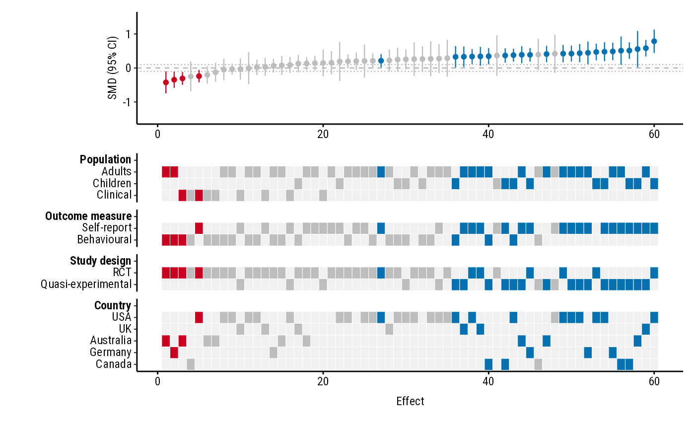
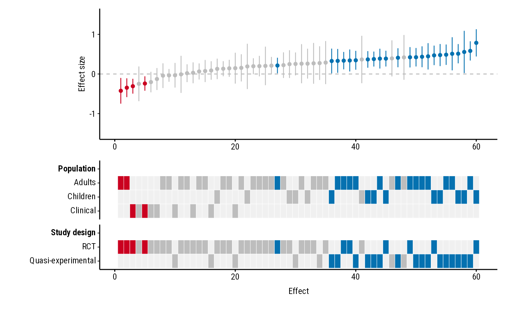
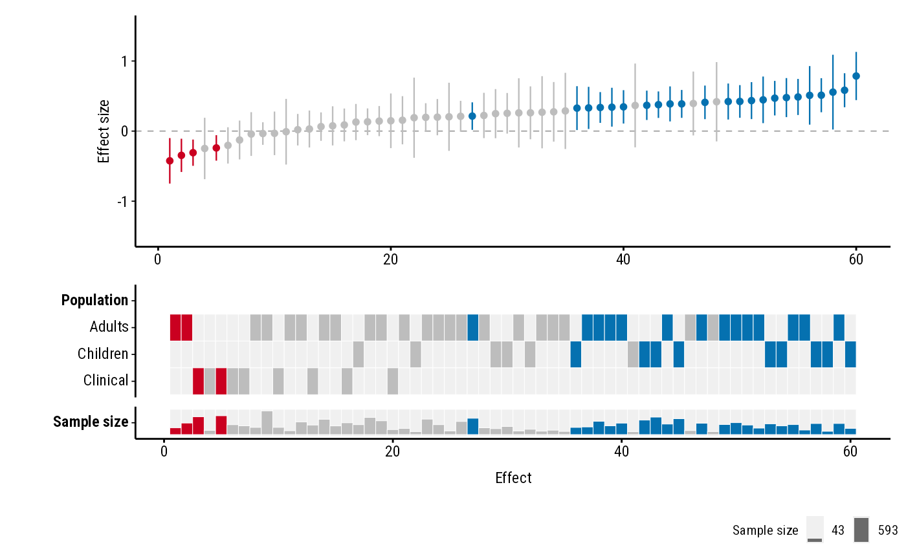

Forest plot of studies with a heatmap of study properties
Source:R/plot_forestmap.R
plot_forestmap.RdPlots each study's effect size and 95% confidence interval, sorted from smallest to largest, above a heatmap showing each study's properties (population, design, country, ...). It shows at a glance whether studies with particular properties tend to find larger or smaller effects.
Usage
plot_forestmap(
data,
es,
lb = NULL,
ub = NULL,
moderators,
vi = NULL,
se = NULL,
font = "Roboto Condensed",
palette = "default",
text_size = 9,
forest_height = "auto",
null_value = 0,
rope = NULL,
y_limits = NULL,
y_label = "Effect size",
x_label = "Effect",
max_levels = NULL,
layout = c("standard", "compact")
)Arguments
- data
A data frame with one row per study.
- es
Name of the column holding each study's effect size.
- lb, ub
Names of the columns holding the lower and upper bounds of each study's 95% confidence interval. Give these, or
vi, orse.- moderators
Names of the columns holding study properties (factors). Name the vector to set each moderator's heading, e.g.
c("Study design" = "design", "Population" = "population"); unnamed entries use the column name.- vi
Name of a column holding each study's sampling variance (e.g.
vifrommetafor::escalc()). The 95% confidence interval is computed ases± 1.96 × √vi. Use instead oflbandub.- se
Name of a column holding each study's standard error. The 95% confidence interval is computed as
es± 1.96 ×se. Use instead oflbandub.- font
A font family installed on your computer (e.g.
"Helvetica"), or the path to a.ttf/.otffont file. The default,"Roboto Condensed", comes with the package, so it works on every computer.- palette
A palette name from forestmap_palettes (
"default","okabe_ito","viridis","greyscale") or three colours, e.g.c(positive = "darkgreen", negative = "purple", null = "grey").- text_size
Base text size in points.
- forest_height
Share of the plot's height given to the forest plot (the top panel), between 0 and 1 (
0.5gives the forest plot and heatmap equal height)."auto"(the default) gives the heatmap more room the more rows it has.- null_value
The value meaning "no effect":
0for differences and log ratios,1for raw ratios such as odds ratios.- rope
Optional region of practical equivalence, drawn as a shaded band: two numbers such as
c(-0.1, 0.1), or one number for a band symmetric aroundnull_value.- y_limits
Optional y-axis limits, e.g.
c(-1, 1). By default the axis is symmetric aroundnull_valueand shows every confidence interval in full; for ratios (null_valueabove 0 and every value positive) it starts at 0.- y_label, x_label
Axis titles.
- max_levels
Optional maximum number of rows per moderator. With
max_levels = 3, the 2 most common levels are shown and the rest are merged into one "Other" row. If levels tie for the last place, all of them are kept (with a warning).NULL(the default) shows every level.- layout
"standard"puts a bold heading above each moderator's rows;"compact"puts the moderator name to the left of its rows instead, which makes the heatmap shorter.
Value
A patchwork object. Print it to
display it, or save it with ggplot2::ggsave().
Details
Each row of data is one study. Effects are coloured by their confidence
interval: positive when it lies entirely above null_value, negative
when entirely below, and null otherwise. Each study's heatmap tiles take
the same colour.
Moderators
Each moderator (study property) gets its own block in the heatmap with one
row per factor level, in the order of the factor's levels. Use factor()
with levels = to control the order. A missing value (NA) means the
study doesn't report that property, so it gets no filled tile in that
block. Character columns are converted to factors (with a message).
Size and saving
The plot has no fixed physical size; choose the width and height when you
save it, e.g. ggplot2::ggsave("plot.png", p, width = 7, height = 5.25).
forest_height and text_size control proportions and text.
PNG and SVG files saved with ggplot2::ggsave() always use the chosen
font. Some other graphics devices only see fonts installed on your
computer, and show the bundled Roboto Condensed in another font until you
install it (the files are in system.file("fonts", package = "forestmap")):
RStudio's Plots pane: or set Tools > Global Options > General > Graphics > Backend to AGG.
PDF: save with
device = cairo_pdf.
Examples
p <- plot_forestmap(
forestmap_example,
es = "smd", vi = "vi",
moderators = c(
"Population" = "population",
"Outcome measure" = "outcome",
"Study design" = "design",
"Country" = "country"
),
rope = c(-0.1, 0.1),
y_label = "SMD (95% CI)"
)
p

# With confidence interval bounds instead of variances
dat <- forestmap_example
dat$ci_lower <- dat$smd - 1.96 * sqrt(dat$vi)
dat$ci_upper <- dat$smd + 1.96 * sqrt(dat$vi)
plot_forestmap(
dat, es = "smd", lb = "ci_lower", ub = "ci_upper",
moderators = c("Population" = "population", "Study design" = "design")
)

# Compact layout, Okabe-Ito palette
plot_forestmap(
forestmap_example, "smd", vi = "vi",
moderators = c("Population" = "population", "Study design" = "design"),
palette = "okabe_ito",
layout = "compact"
)

if (FALSE) { # \dontrun{
ggplot2::ggsave("forestmap.png", p, width = 7, height = 5.25, dpi = 300)
} # }